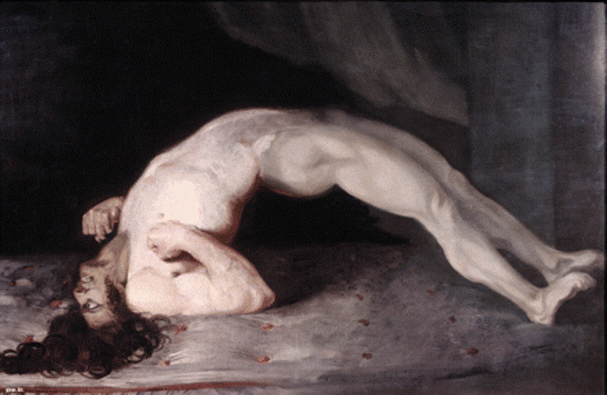

Art Analysis of "Opisthotono Shires Version Tetanus"
[a] Artist/Group/Tribe
The artwork "Opisthotono Shires Version Tetanus" is often attributed to historical depictions within medical art, conceptualized by artists interested in illustrating the human body under extreme conditions. These representations are frequently found in medical texts and anatomical studies from the late 18th and 19th centuries, when the scientific understanding of diseases was evolving.
[b] Historical and Socio-Cultural Context (Time-frame)
This artwork arises from a period when scientific and medical illustrations were crucial for educational purposes. The 19th century saw significant advancements in understanding diseases, driven by the Industrial Revolution and a burgeoning interest in scientific inquiry. This era embraced both the horrors of disease and the beauty of the human body's form, emphasizing a growing curiosity about pathological conditions like tetanus.
[c] Symbolism and/or Iconography
The image of a body in severe spasm underscores the painful symptoms of tetanus, also known as lockjaw, an often life-threatening condition. Iconographically, the posture known as opisthotonos reflects extreme muscular contractions, symbolizing the struggle against unseen forces of illness. Such depictions were hallmarks of medical iconography intended to educate and evoke empathy.
[d] Stylistic Significance (Elements of Art/Principles of Design)
The composition emphasizes the tension and curvature of the human form, focusing on chiaroscuro to accentuate muscle definition. The palette is typically subdued, often employing tenebrism to highlight the drama unfolding within the patient's body. Line and form converge to guide the eye along the contorted figure, illustrating both vulnerability and the resilience of the human spirit.
[e] Social/Cultural Inequities
The spread and treatment of tetanus reflect social inequities, particularly in the 19th century, where access to medical care was profoundly unequal. Poor sanitation and lack of healthcare infrastructure exacerbated such diseases among underserved populations. Artworks displaying medical conditions often served to raise awareness of the suffering endured by those with limited access to treatment.
[f] Description of Disease & Etiology
Tetanus is a bacterial infection caused by Clostridium tetani, commonly found in soil and rusty objects. The bacteria produce a potent neurotoxin that targets the nervous system, leading to muscle stiffness and spasms. While preventable through vaccination, untreated tetanus can be fatal, emphasizing the need for prompt medical intervention.
[g] Pathology Signs/Signifiers of Illness
Key signs include muscle rigidity, trismus (lockjaw), and opisthotonos—a classical arching of the back due to severe muscle spasms. These symptoms manifest visibly and dramatically, often severe enough to be used illustratively in medical documentation of the 19th century.
[h] Treatment
Historically, treatments were rudimentary and primarily supportive, focusing on wound care and muscle relaxants. In modern medicine, the treatment protocol includes tetanus immunoglobulin, antibiotics, and muscle relaxants. Emphasis is placed on prevention through vaccination, which dramatically reduces incidence.
[i] Social Determinants of Illness
Poor hygiene, inadequate healthcare access, and lack of vaccination commonly underpin the persistence of tetanus in certain populations. These social determinants highlight the continuing inequities in healthcare and the vulnerability of marginalized groups to preventable diseases.
[j] References and Citations
1. "The Man with Locked Jaw: Clinical and Medical Art in the 19th Century." Journal of Medical History.
2. "Tetanus: Pathophysiology and Treatment Protocols," The Lancet Infectious Diseases.
3. "Artistic Representations of Disease: An Analysis," Art History Review, 2022.
4. "Social Inequities in Health: An Examination of Tetanus," Global Health Studies Quarterly.
5. "Medical Illustration: Bridging Art and Science," Journal of Anatomy and Physiology.